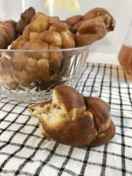

<?xml version="1.0" encoding="UTF-8"?><rss version="2.0"
	xmlns:content="http://purl.org/rss/1.0/modules/content/"
	xmlns:wfw="http://wellformedweb.org/CommentAPI/"
	xmlns:dc="http://purl.org/dc/elements/1.1/"
	xmlns:atom="http://www.w3.org/2005/Atom"
	xmlns:sy="http://purl.org/rss/1.0/modules/syndication/"
	xmlns:slash="http://purl.org/rss/1.0/modules/slash/"
	>

<channel>
	<title>South Africa &#8211; Levia Wegner</title>
	<atom:link href="" rel="self" type="application/rss+xml" />
	<link>../../../index.html</link>
	<description>Baking &#38; Happiness</description>
	<lastBuildDate>Wed, 07 Feb 2024 18:58:51 +0000</lastBuildDate>
	<language>en-US</language>
	<sy:updatePeriod>
	hourly	</sy:updatePeriod>
	<sy:updateFrequency>
	1	</sy:updateFrequency>
	<generator>https://wordpress.org/?v=6.8.2</generator>

<image>
	<url>../../../wp-content/uploads/2021/06/Levia-L2-150x150.png</url>
	<title>South Africa &#8211; Levia Wegner</title>
	<link>../../../index.html</link>
	<width>32</width>
	<height>32</height>
</image> 
	<item>
		<title>Koeksisters</title>
		<link>../../../koeksisters/index.html</link>
		
		<dc:creator><![CDATA[Levia Lydia Wegner]]></dc:creator>
		<pubDate>Sun, 01 Aug 2021 13:30:17 +0000</pubDate>
				<category><![CDATA[Baking Powder]]></category>
		<category><![CDATA[Sweetness]]></category>
		<category><![CDATA[Africa]]></category>
		<category><![CDATA[South Africa]]></category>
		<category><![CDATA[Sweet]]></category>
		<guid isPermaLink="false">https://www.leviawegner.com/?p=826</guid>

					<description><![CDATA[This delicious plated treat will not only look gorgeous but taste delicious too. Soaked in ice cold syrup it makes everyone's mouth water. Go ahead and give it a try!]]></description>
										<content:encoded><![CDATA[<p></p>
<p>There are many recipes from <strong>South Africa</strong>. This is one of them, a very delicious one. The word koeksister is said to be derived from a tale of two sisters who would sit plaiting this pastry. It is pronounced &#8220;cook sister&#8221;. It consists of a simple dough that is cut into rectangles that are themselves divided into three strings and then plaited. The dough itself is not sweet and what gives it its sweetness is the syrup it is soaked in. The outcome is absolutely beautiful treats that are easy and fun to make. So, let&#8217;s give it a try!</p>
<h2>Recipe</h2>
<h3>Ingredients</h3>
<ul>
<li>250g Flour</li>
<li>12g Baking Powder</li>
<li>10g Butter</li>
<li>1 Egg</li>
<li>100ml Water</li>
</ul>
<p>For the syrup</p>
<ul>
<li>400ml Water</li>
<li>750g Sugar</li>
<li>5g Cream of Tartar (1 pckg)</li>
<li>20ml Lemon juice</li>
</ul>
<h3>Instructions</h3>
<ol>
<li>Mix the baking powder into the flour.</li>
<li>Rub in the butter with your fingertips until obtaining a crumbly texture.</li>
<li>Add the egg and some water and stir with a fork.</li>
<li>Add more water until obtaining a slightly sticky texture. You might not have to use all of the water.</li>
<li>Knead the dough until it is no longer sticky.</li>
<li>Leave the dough to rest for 30 minutes.</li>
<li>Heat the water and mix in the sugar and cream of tartar.</li>
<li>When the sugar and cream of tartar are disolved, mix in the lemon juice and leave to simmer for another 10 minutes.</li>
<li>Place the syrup in a metal bowl or small pot before placing it on ice cubes.</li>
<li>After 30 minutes, take the dough and roll it out until it is about 1/2 cm thick.</li>
<li>Cut the dough into 10cm long and 3cm wide rectangles.</li>
<li>Cut 1cm thick strips into the rectangles leaving one side closed.</li>
<li>Plait the strips pushing down on the ends to make sure they don&#8217;t come apart when frying.</li>
<li>Heat oil in a deep pot and fry the koeksisters until golden brown.</li>
<li>When removing them from the oil, place them on kitchen paper before soaking them in the ice cold syrup.</li>
<li>And enjoy!</li>
</ol>
]]></content:encoded>
					
		
		
			</item>
	</channel>
</rss>

<!-- plugin=object-cache-pro client=phpredis metric#hits=458 metric#misses=4 metric#hit-ratio=99.1 metric#bytes=470002 metric#prefetches=29 metric#store-reads=20 metric#store-writes=3 metric#store-hits=41 metric#store-misses=1 metric#sql-queries=4 metric#ms-total=1596.33 metric#ms-cache=56.56 metric#ms-cache-avg=2.5709 metric#ms-cache-ratio=3.5 -->
